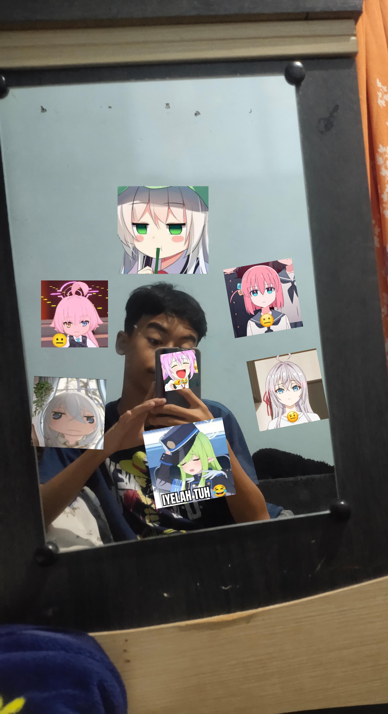

×

Welcome !
Website ini diciptakan oleh Arkana Byan Syahputra hanya sekedar iseng/gabut. Sekaligus untuk melatih skill coding website saya. Awalnya saya kepikiran membuat website ini saat perjalanan pulang dari sekolah, pada hari Jum'at, lebih tepatnya tanggal 09 - 05 - 2025, dikerjakan dari pukul -+ 11:30 WIB ( Sebelum Melaksanakan Shalat Jum'at ) dan selesai pada 13:50.